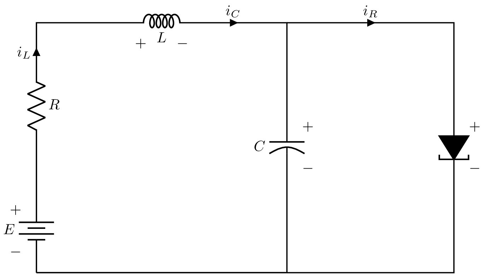
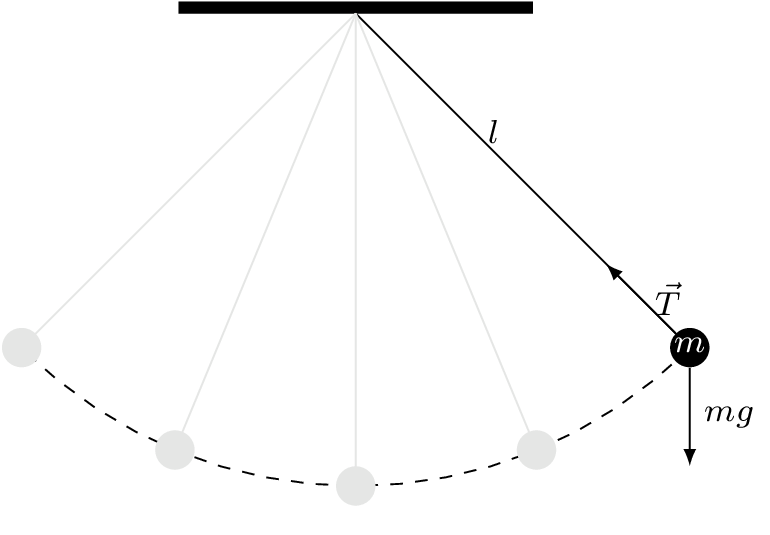

Análisis de dinámicas de sistemas en el dominio del tiempo#
Considere un sistema autónomo representado por la siguiente ecuación
donde \(f:D\leftarrow R^{n}\) es un mapa local de Lipschitz de un dominio \(D\subset R^{n}\) en \(R^{n}\).
Para poder estudiar la estabilidad del sistema (48), es necesario obtener \(\bar{x}\in D\) que denota el punto de equilibrio
Localización de los puntos de equilibrio#
Definición 40
El punto de equilibrio \(x=0\) de \(\dot{x} = f(x)\) es
estable si, para cada \(\varepsilon >0\), hay un \(\delta = \delta(\varepsilon)>0\) tal que
inestable si no es estable.
asintóticamente estable si este es estable y \(\delta\) se escoge tal que.
Ejemplo
Considere las ecuaciones del péndulo simple y obtenga sus puntos de equilibrio
Linealización de sistemas en torno a un punto de equilibrio#
Un sistema (LTI) de la forma
tiene un punto de equilibrio en el origen. Este punto de equilibrio está aislado si y sólo si \(\text{det}(A)\neq0\). Si \(\text{det}(A)=0\), la matriz \(A\) tiene un espacio nulo no trivial.
Las propiedades de estabilidad del origen pueden ser caracterizadas por las ubicaciones de los eigenvalores de la matriz \(A\).
Recordemos que la solución al sistema \(\dot{x}=Ax\) dada una condición inicial \(x_{0}\) está dada como sigue
Además, para cualquier matriz \(A\) existe una matriz \(P\) no \myindex{singular} que transforma \(A\) en su forma de Jordan, i.e.
donde \(J_{i}\) es el bloque de Jordan asociado con el eigenvalor \(\lambda_{i}\) de A.
La forma generalizada del bloque de Jordan, considerando un orden \(m\), tiene la forma siguiente
por consiguiente
donde \(m_{i}\) es el orden del bloque de Jordan asociado con el eigenvalor \(\lambda_{i}\).
Teorema 11
El punto de equilibrio \(x=0\) de \(\dot{x} = Ax\) es estable si y sólo si todos los eigenvalores de \(A\) satisfacen \(\text{Re}(\lambda_{i})\leq 0\) y cada eigenvalor con \(\text{Re}(\lambda_{i})= 0\) tiene un bloque de Jordan asociado de uno. El punto de equilibrio \(x=0\) es (globalmente) asintóticamente estable sí y sólo sí todos los eigencalores de \(A\) satisfacen \(\text{Re}(\lambda_{i})< 0\).
La demostración de este teorema se puede consultar en Khalil (2002).
Linealización#
Suponga que las funciones \(f_{1}\) y \(f_{2}\) del sistema autónomo de segundo orden
son continuamente diferenciables y que además \(p=(p_{1},p_{2})\) es un punto de equilibrio, el sistema (50) se puede expandir mediante serie de Taylor en torno a \((p_{1},p_{2})\) como sigue
donde
y H.O.T. denota los términos de orden superior de la expansión de Taylor, es decir \((x_{1}-p_{1})^{2},(x_{2}-p_{2})^{2},(x_{1}-p_{1})\times (x_{2}-p_{2})\), y así sucesivamente.
Dado que \((p_{1},p_{2})\) denota el punto de equilibrio, tenemos
Puesto que consideramos trayectorias cercanas a este punto, definimos
Por consiguiente, las ecuaciones de estado quedan de la siguiente forma
Si consideramos una vecindad cercana al punto de equilibrio, entonces podemos decir que los términos H.O.T son despreciables y por consiguiente, realizamos una aproximación de la ecuación de estado no lineal por la ecuación de estado lineal como sigue
Reescribiendo lo anterior en una forma vectorial, tenemos
donde
Nota
La matrix \([\partial f/\partial x]\) es llamada la matriz Jacobiana de \(f(x)\) mientras que \(A\) es la matriz Jacobiana evaluada en el punto de equilibrio \(p\).
Ejemplo
Considere el circuito de diodo tunel que se muestra a continuación
{kind=link}

Figura 14 Diodo túnel.#
donde los elementos de almacenamiento de energía son el capacitor \(C\) y el inductor \(L\) mientras que el diodo tunel es representado por la relación \(i_{R} = h(v_{R})\). Asumiendo que los elementos del circuito son lineales e invariantes en el tiempo, el circuito de diodo tunel se puede representar matemáticamente como sigue
donde \(i\), \(v\) representan la corriente y el voltaje a través de los elementos, respectivamente.
Considere que los parámetros del modelo son \(u=1.2V\), \(R=1.5k\Omega = 1.5\times 10^{3}\Omega\), \(C=2pF = 2\times 10^{-12}F\), \(L=5\mu H = 5\times 10^{-6}H\). Además, suponga que \(h(\cdot)\) está dada por
Utilice las Leyes de Kirchhoff para reescribir las ecuaciones anteriores.
Encuentre los puntos de equilibrio.
Linealice el sistema.
Evalúe la matriz Jacobiana en los puntos de equilibrio.
Ejemplo
Considere el péndulo simple mostrado en la siguiente
{kind=link}

Figura 15 Diagrama de péndulo simple sin fuerza externa.#
donde \(l\) denota la longitud de la varilla, y \(m\) la masa de la bola.
Cuya representación en espacio de estados está dada como sigue
Encuentre los puntos de equilibrio.
Linealice el sistema.
Evalúe la matriz Jacobiana en los puntos de equilibrio.